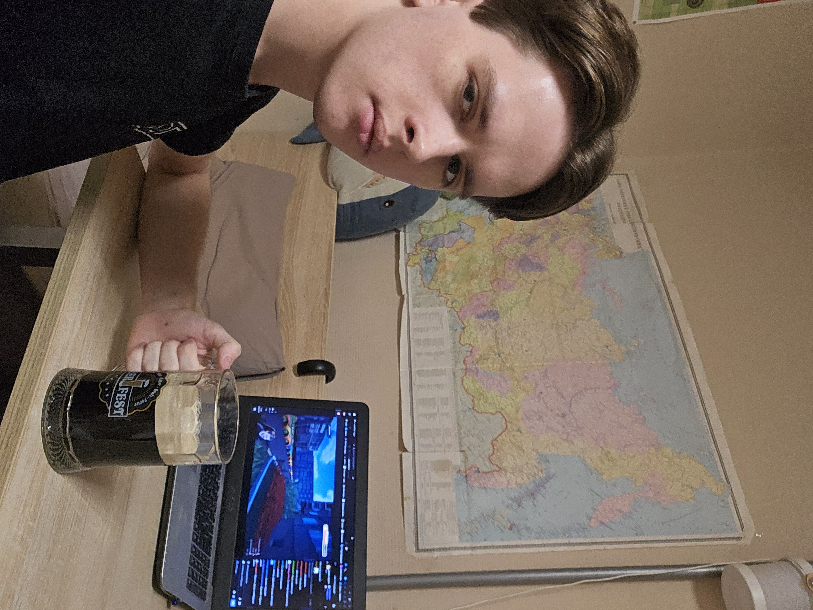

Ростовский период своей жизни я всегда делил на две части, и школа вместе со знакомством с тобою прочно закрепились у меня со второй половиной жизни в Ростове. Но перед тем, как говорить о тебе, мне кажется важным написать пару слов о том, кем я был до нашего знакомства.

Если бы ты посмотрела на меня в дошкольный период со стороны, то вряд ли заметила бы сильные отличия - я ходил в универ, переписывался с парой друзей, иногда гулял по вечерам.
Хотя уже тогда я понимал, что глубоко внутри я просто жду. Жду окончания учёбы, жду переезда, жду чего-то нового, бежал от бессмысленности. Но до переезда было далеко, а пробовать что-то новое хотелось незамедлительно.

И в целом, на самом деле, это состояние я это скрывал от друзей и знакомых - зачем лишний раз забивать голову и им? Тебе я, насколько помню, тоже не сразу говорил об этом, и, наверное, от этого было проще общаться поначалу.
Я устроился в школу в поисках чего-то нового. Нашёл тебя и меня, если честно, в первую очередь удивило то, что ты была молодой, младше меня, что выглядело необычно на фоне Узбяковых и прочих Спалвисов нашей школы. Не знаю, была ли такая встреча судьбой, или просто удачным стечением обстоятельств. Но для меня факт остается фактом: в тот день я пошел на собеседование в одну школу, а попал в другую. И именно там я встретил тебя.
Спасибо, что появилась в моей жизни в это время,
Володя Английский